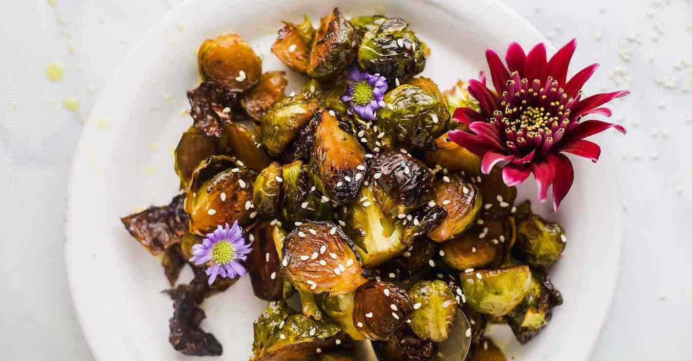

Honey Soy Roasted Brussel Sprouts
 4
servings
4
servings 30
minutes
30
minutes Source
Source Vegetarian
Vegetarian
Sweet, salty, veggie, yummy.

3 cupshalved brussel sprouts1 tbspolive oil3 tbspsoy sauce1 ½ tbsphoney1 clovegarlic, minced½ tspcracked pepperto tastesesame seeds garnish
Ingredients
Preheat oven to
400 °F.
3 cupshalved brussel sproutsdrizzleolive oil
Cut brussel sprouts in half, spread them out on foil lined baking sheet, and drizzle with olive oil. Bake for
20 minutes, or until nice and crispy.
1 tbspolive oil3 tbspsoy sauce1 ½ tbsphoney1 clovegarlic, minced½ tspcracked pepper
In a large bowl add olive oil, soy sauce, honey, garlic, and pepper. Stir until mixed.
After the brussel sprouts are done and still hot, add them to the large bowl with soy sauce mixture. Toss/stir well, until brussel sprouts are thoroughly covered.
Garnish with sesame seeds and serve.